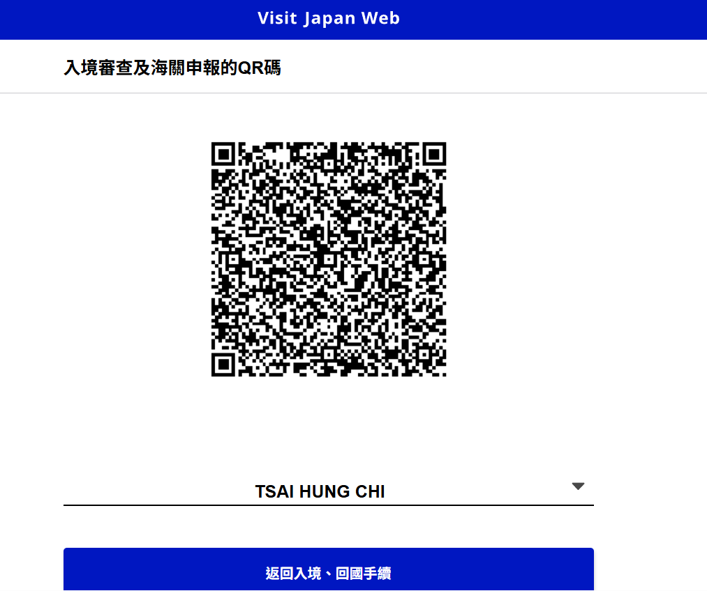

SUNQ Pass D1-D2
JR北九州 3日券
太宰府一日券
入境 QR Code
緊急聯絡
X
日本入境 QR Code
抵達大分機場後直接給移民官掃描

有效日期：2025-12-10
X
班機資訊詳情
去程 IT750 12:00 TPE → 15:00 OIT 回程 IT241 10:55 FUK → 12:40 TPE 座位 8A
X
2025 北九州 獨旅
12/10 大分機場 IT750 → 12/16 福岡機場 IT241
Up Arrow